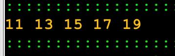

Exercício
Dificuldade
Pontos
Data limite
Créditos
Ficha05_011
Very easy
2.0
26/09/2022 16:02:00
(c)M@nso 2021
Números ímpares [10,20[
Escreva uma algoritmo que imprima na consola os números ímpares no intervalo [10, 20 [

Input
Output
11 13 15 17 19
Algorithmi 22.05 Student version (c) Antonio M@nso 2022 Instituto Politécnico de Tomar - All rights reserved